🌲 Trip Completed — Trip Report & Photos Below
September 25–27, 2026 — see the trip report and photo gallery below.
Join Mike Norton and the Overland EastBay crew for a backcountry adventure through Tahoe National Forest exploring scenic alpine lakes, mountain ridges, and California Backcountry Discovery Route (BDR) connectors in the Bowman Lake and Sierra Buttes region.
This 3-day expedition combines scenic high-country forest service roads, moderate rocky trails, waterfall side trips, and dispersed lakeside camping at Sawmill Lake and Milton Lake.
📍 Information
- Trip Status: Completed (September 25–27, 2026)
- Team Lead: Mike Norton
- General Area: Tahoe National Forest, CA (Bowman Lake / Lakes Basin / Sierra Buttes area)
- Terrain: Forest service roads and moderate mountain trails (rated moderate)
Dates
September 25 – September 27, 2026
Meet-up Location
Date: Friday, September 25, 2026
Time: 7:00 AM
Location: McDonald's at Santa Rita and Highway 580 E. (Standard Deployment Point)
37°42'02.9"N 121°52'10.7"W
37.700795, -121.869642
🗺️ Itinerary & Route Details
Day 1 — Friday, September 25: Staging • Bowman Lake • Sawmill Lake
Meet Time: 7:00 AM at McDonald's (6800 Santa Rita Rd & I-580 E, Pleasanton, CA).
Travel Route: I-580 → I-205 E → I-5 N → Hwy 4 E → Hwy 99 N → I-80 E toward Reno. Take the Hwy 20 exit just past Yuba Gap, travel west on Hwy 20 to Bowman Road, then take Bowman Road north toward Bowman Lake.
Trail Highlights: At Bowman Lake, turn left onto Weaver Lake Road for a scenic side excursion to Weaver Lake and falls. Backtrack Weaver Lake Road to Bowman Road, proceed east to Jackson Creek, and turn south onto Faucherie Lake Road to Sawmill Lake.
Camp Night 1: Sawmill Lake — dispersed NFS lakeside camp (39.4417665, -120.5970931).
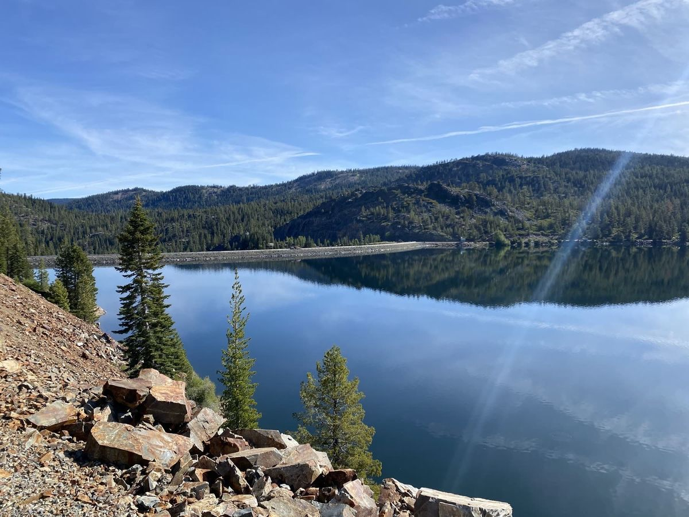
Day 2 — Saturday, September 26: Meadow Lake • Austin Meadows • Milton Lake
Morning Departure: Depart Sawmill Lake heading north on Faucherie Lake Road to Meadow Lake Road, then head east exploring the high-elevation basin.
Trail Highlights: Turn left onto Austin Meadows to potentially explore Forest Service Road 41 (Pinoli Road), slated to open September 21, 2026. If FSR 41 (Pinoli Ridge) remains closed, continue along Austin Meadows Road over Henness Pass to Milton Lake.
Camp Night 2: Milton Lake — dispersed NFS campground (39.52315, -120.57601).
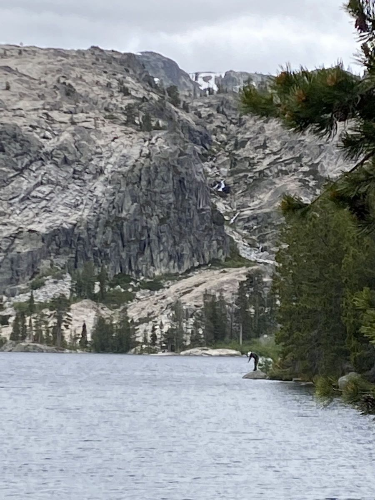
Day 3 — Sunday, September 27: Camp Break • Return Transit
Primary Return: Break camp in the morning. Primary return backtracks to Bowman Lake, then Hwy 20 → I-80 westbound toward the Bay Area.
Alternate Return: If time and trail conditions permit, an alternate series of backcountry trails/roads continuing east connects to Hwy 89 and exits into Truckee, CA.
Camp Locations
Night 1 Camp (Fri 9/25): Sawmill Lake (Dispersed NFS camp)
Coordinates: 39.4417665, -120.5970931
Sawmill Lake Map →
Night 2 Camp (Sat 9/26): Milton Lake (Dispersed NFS campground)
Coordinates: 39.52315, -120.57601
Milton Lake Map →
Notes: Both camps are primitive dispersed campsites in Tahoe National Forest. No piped water, trash collection, or developed facilities—pack it in, pack it out.
Trip Report & Photos
The trip recap will be added when the leader's debrief is available.
From the Trip
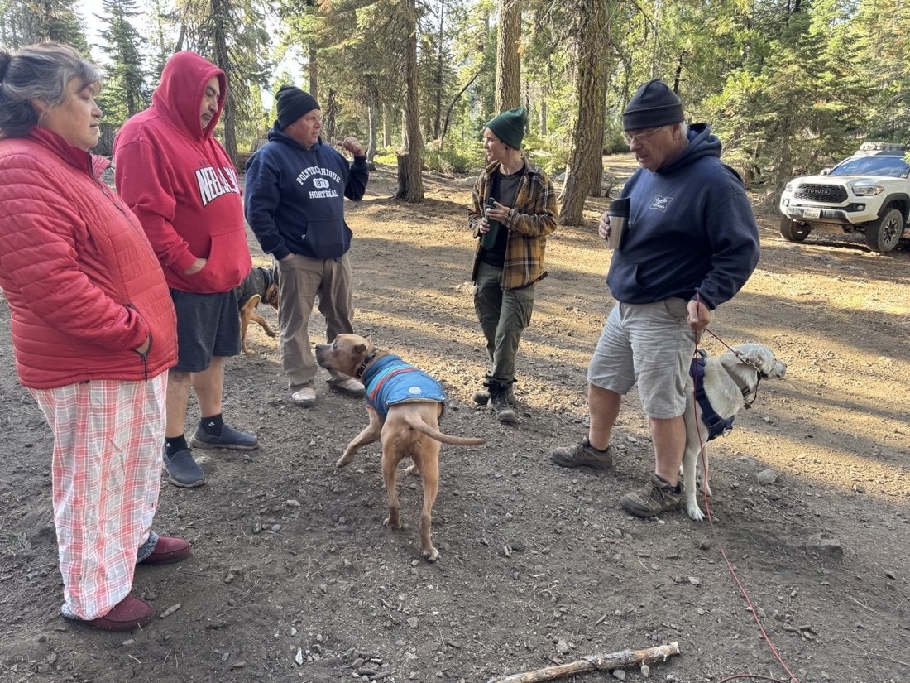
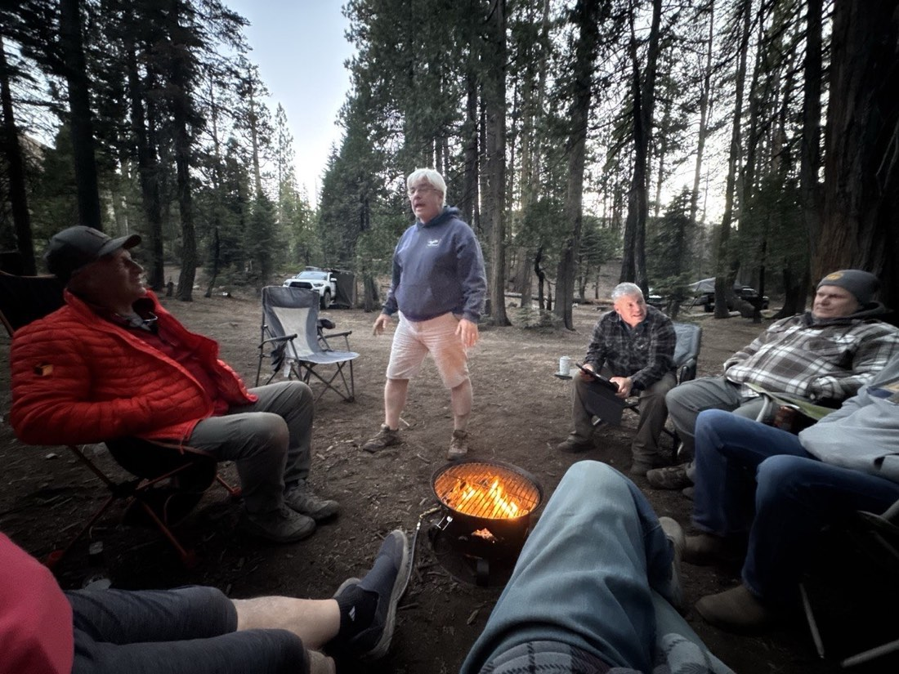
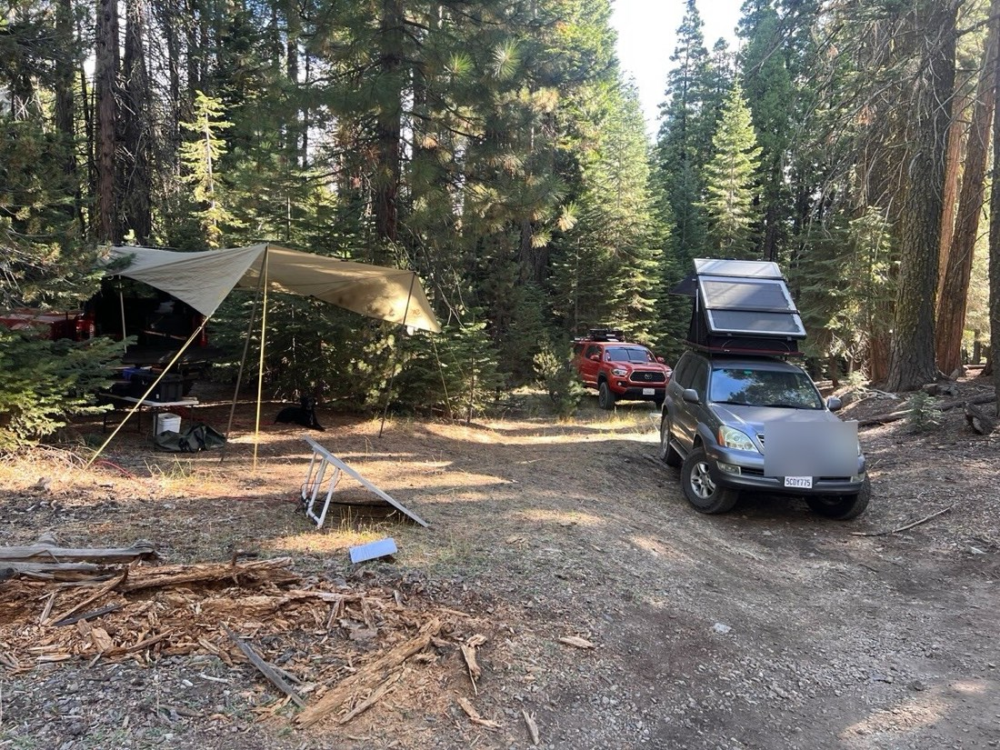
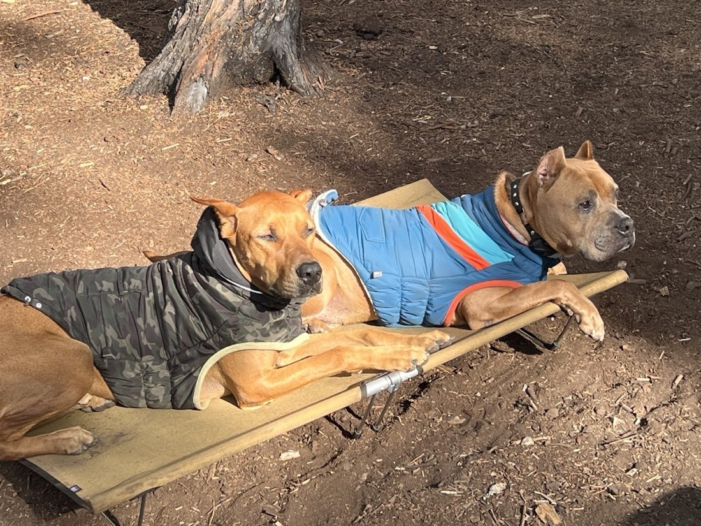
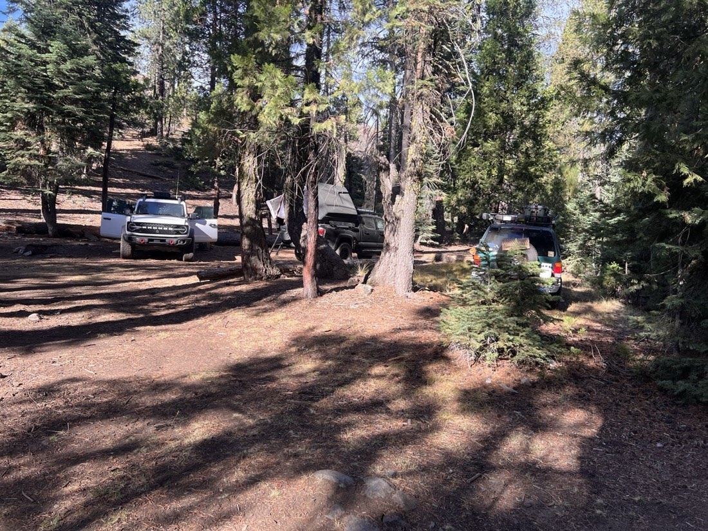
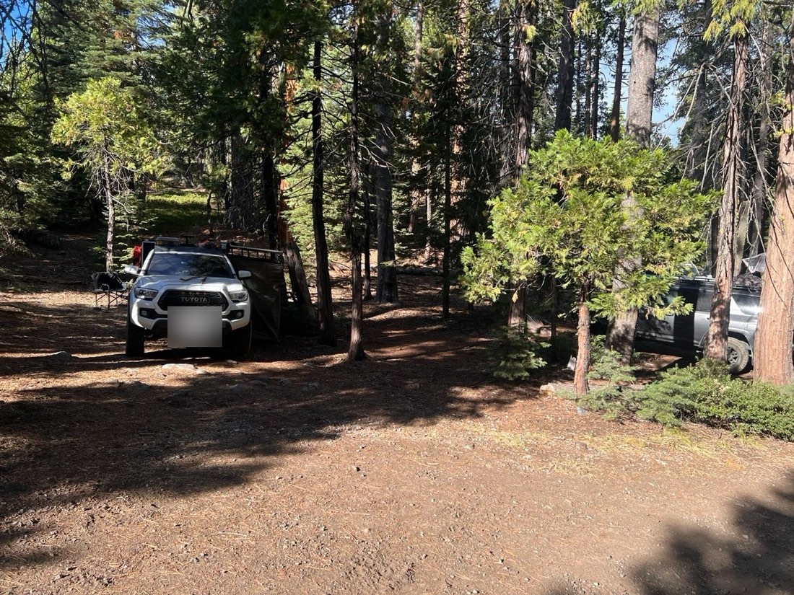
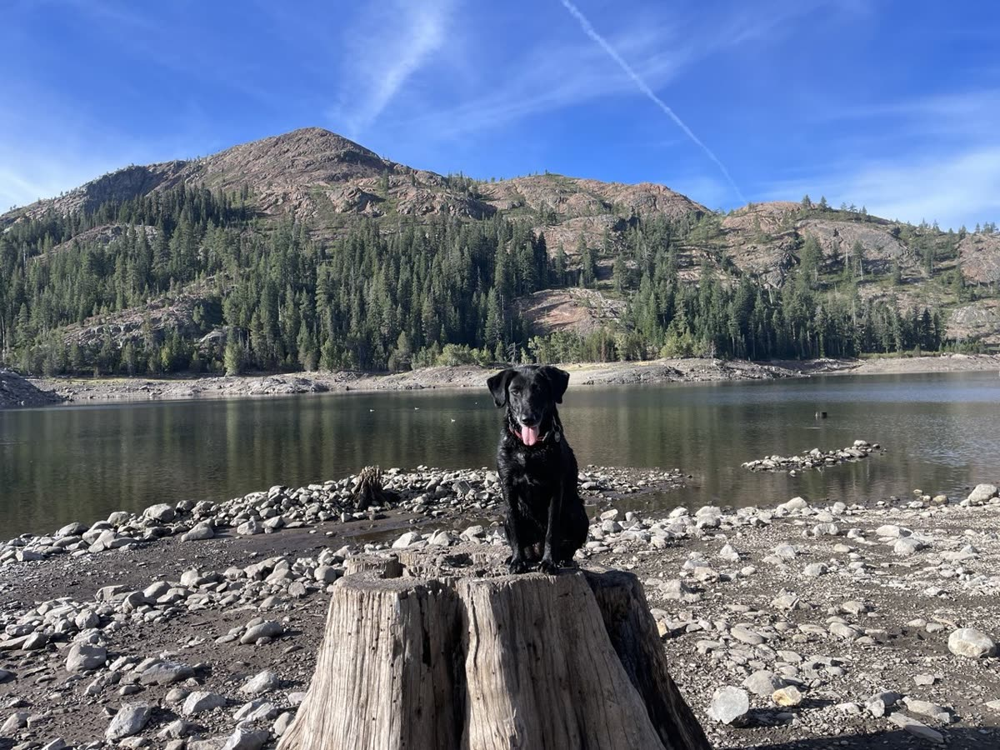
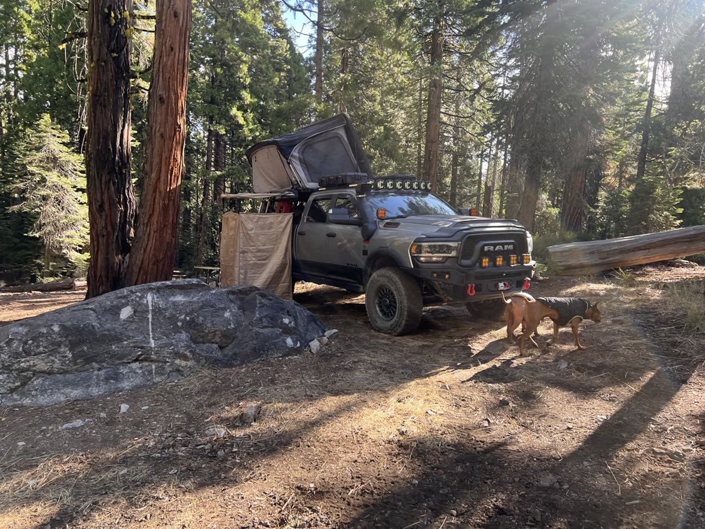
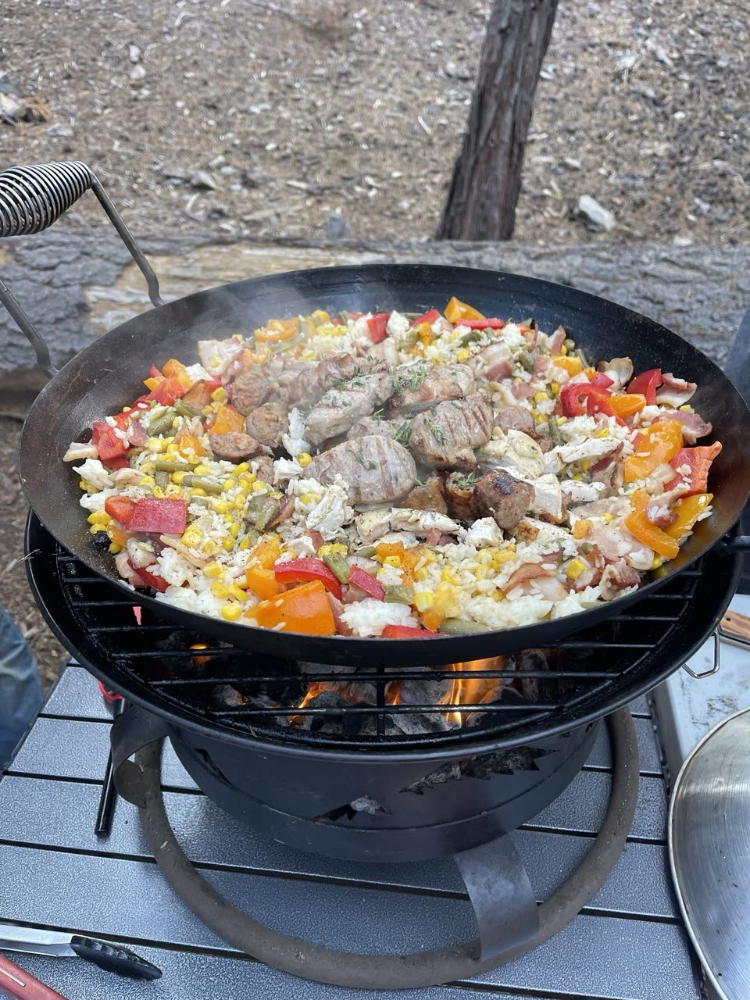
Highlights from the weekend — thanks, Praveen!
Photos and video from the weekend, shared by the crew.
📸 Full Album & Video🔥 Fire Restrictions & Permits
Current as of September 5, 2026
Fire Restrictions: This trip travels through Tahoe National Forest. Under seasonal fire restrictions, wood and charcoal campfires are prohibited outside of designated developed recreation sites (which means open campfires and charcoal fires are NOT allowed at our dispersed camp spots).
Permit Required: A free California Campfire Permit is mandatory for operating portable gas, propane, or pressurized liquid-fuel stoves and lanterns with an on/off shutoff valve. Every participant planning to cook must carry a valid permit.
Note: Both campsites (Sawmill Lake and Milton Lake) are located in Tahoe National Forest. Dispersed wood and charcoal campfires are prohibited under seasonal USFS fire restrictions. Portable gas or propane stoves with a shutoff valve are permitted with a California Campfire Permit.
Weather
Preparing for the trip, check the weather for the Highway 89 high country corridor (Sierraville / Truckee area):
Current Weather
Expected Trip Weather
Get Ready Before We Go
🛑 SAFETY REQUIREMENTS
Rear Amber Chase Light and HAM Radio communications are REQUIRED to travel with the group.
Why Amber Chase Lights?
Dusty mountain trails are common – amber lights penetrate dust far better than white or red, helping prevent rear-end collisions in low visibility. Learn more about Why Chase Lights?
HAM Radio
Program to 146.460 MHz (simplex). Handhelds work great even without a license for listening.
If you don't have a ham radio yet, check out our guide to get started.
Other Essentials
- Offline navigation (download GPX – limited/no cell service in mountain canyons)
- Off-road tires, full-size spare, recovery gear
- Plenty of water, food, warm layers for cool Sierra evenings, emergency kit
Group Trip Agreement & Waiver
Before signing up, please review the Voluntary Acknowledgment of Risk and Group Trip Agreement. By RSVP'ing and participating in this trip, you certify that you have read, understood, and voluntarily agreed to these terms.